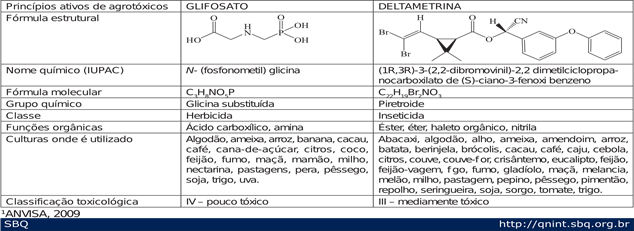
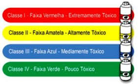

As formulações de agrotóxicos são constituídas de princípios ativos, que é o termo usado para descrever os compostos responsáveis pela atividade biológica desejada. O mesmo princípio ativo pode ser vendido sob diferentes formulações e diversos nomes comerciais, e também podemos encontrar produtos com mais de um princípio ativo.
Cerca de 115 elementos químicos conhecidos atualmente, 11 podem estar presentes nas formulações dos agrotóxicos, dentre eles: bromo (Br), carbono (C), cloro (Cl), enxofre (S), fósforo (P), hidrogênio (H), nitrogênio (N) e oxigênio (O), e são os mais frequentemente encontrados, conferindo características específicas aos agrotóxicos.
Observe o quadro abaixo e conheça os principais princípios ativos de dois agrotóxicos, glifosato e deltametrina. Observando a sua nomenclatura, funções orgânicas sua toxicidade, e as culturas onde estes podem ser utilizados.
Quadro 1. disponível em: http://qnint.sbq.org.br/qni/visualizarTema.php?idTema=55

Os agrotóxicos são classificados de diversas maneiras:

A Lei nº 7802, de 11 de julho de 1989, regulamentada pelo Decreto nº4074, de 04 de janeiro de 2002, publicado no DOU de 08 de janeiro de 2002, dispõe que os rótulos deverão conter uma faixa colorida indicativa de sua classificação toxicológica.
São elas:
Classe I – faixa vermelha: produto altamente perigoso;
Classe II – faixa amarela: produto muito perigoso;
Classe III – faixa azul: produto perigoso;
Classe IV – faixa verde: produto pouco perigoso.

Conheça os riscos dos agrotóxicos para saúde humana assistindo ao vídeo:
Baseado no vídeo que você assistiu. Questione com seus vizinhos e amigos quais os casos conhecidos de envenenamento com defensivos agrícolas em sua comunidade.
Responsáveis: Prof. Katiane Arrais Jales, Prof. Maria Cristina Martins Ribeiro de Souza
Universidade Federal do Ceará - Instituto UFC Virtual